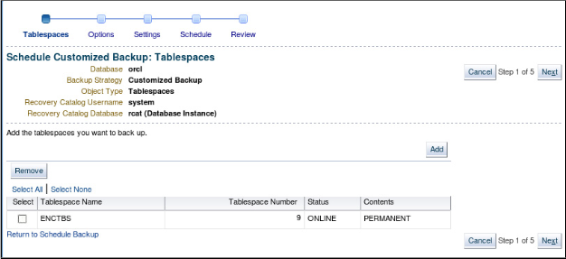
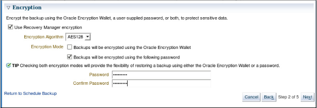
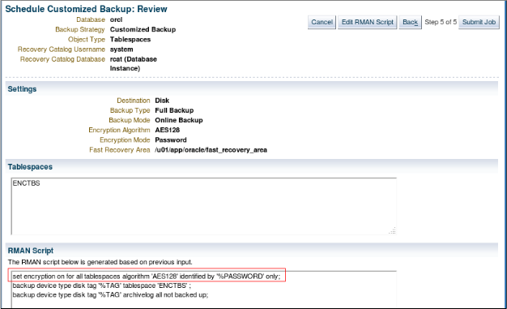
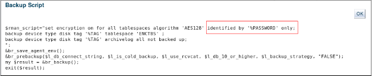
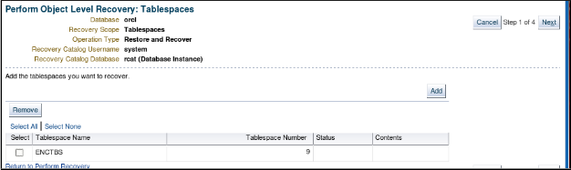
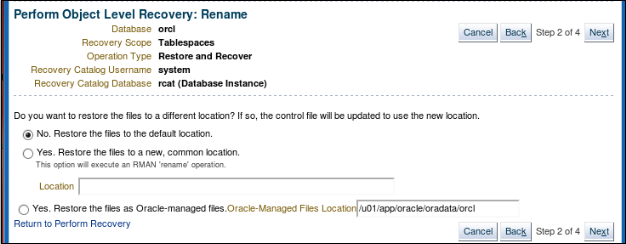
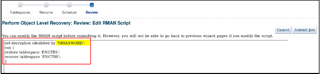

2020-04-13 BoobooWei
实践概述
在这些实践中，您将使用RMAN工具备份，并使用密码对备份进行加密。
练习8-1：使用RMAN加密备份
总览
在实践中，您将创建ENCTBS表空间的密码加密备份。该练习显示了Cloud Control中的步骤。有关命令行，请参阅步骤10中的RMAN脚本。
假设条件
您已以SYSMAN用户身份登录到Enterprise Manger Cloud Control，并具有orcl主页显示。
您还将打开一个终端窗口，其中将/home/oracle/labs 作为当前目录。环境变量指向orcl实例。
任务
1.在终端窗口中，以oracle用户身份执行lab_08_01_01.sh脚本。该脚本为此创建ENC用户和ENCTBS表空间。可以在/tmp/setup.log文件中查看输出。
$ ./lab_08_01_01.sh |
2.在企业管理器云控制中，导航到可用性>备份和恢复>计划备份。如果需要，请使用NC_SYSDBA命名凭据登录。
3.在“计划备份”页面上，确保将主机凭据设置为NC_ORCL_HOST_ORACLE。选择表空间，然后单击计划自定义备份。
4.在“计划自定义备份：表空间”页面上，单击“ 添加”。
5.选择 ENCTBS 表空间，然后单击“ 选择”按钮。
6.返回“计划自定义备份：表空间”页面，单击“ 下一步”。

7.在“计划自定义备份：选项”页面上：
A)确认以下选择：
完全备份
同时备份磁盘上的所有存档日志
其他所有选项均应取消选择。
B)展开“加密”部分，然后选择以下选项：
使用Recovery Manager加密
加密算法：AES128
将使用以下密码对备份进行加密
C)在密码和确认密码中输入oracle_4U或您选择的密码。
如果您选择其他密码，请确保记住该密码。当你使用密码加密时，必须为备份和还原操作提供相同的密码。这是一种适合将在远程位置还原的备份的适当技术。

注意：只有在创建和打开Oracle Encryption Wallet（也称为密钥库）之后，才能使用它，如稍后的实践所示。
D)单击下一步。
8.在“计划自定义备份：设置”页面上，接受“ 磁盘”作为目标，然后单击“ 下一步”。
9.在Schedule Customized Backup：Schedule页面上，输入 BACKUP_ENC 作为 Job Name，接受Job Description，确保 Schedule 为 One Time（立即），然后单击Next。

10.查看整个Schedule Customized Backup：Review页面，然后单击Submit Job。
注意：密码不会以文本形式显示，因为这将违反安全性。如果使用命令行界面，则还可以使用SET ENCRYPTION ON ...
在RMAN脚本中使用“仅由密码标识” 命令来启用密码加密。
11.单击查看作业。
12.在执行：orcl页面上，单击备份脚本的显示链接。
13.请注意，备份脚本本身也不显示密码。单击确定。

14.如果您的备份作业仍在运行，请单击“刷新”图标（右上角）。
15.（可选）在“步骤：备份”的“状态”列中单击“ 成功”链接，查看单击“输出日志”，然后在导航栏中单击“ 执行：orcl ”。
16.从Execution：orcl页面，您可以通过多种方式返回orcl主页。例如，单击历史记录> orcl。替代方法是 目标>数据库> orcl 或 所有目标> orcl （数据库实例）。
注意：接下来的大多数操作都是可选的，但是最后的清理和备份任务（步骤16）是必需的。
练习8-2：还原加密的备份
总览
这是一种可选的挑战练习（因为您很可能尚未在课堂上介绍过还原和恢复操作）。仅在您有足够的时间完成挑战时才尝试挑战。
在这种情况下，您将还原密码加密的备份。
所有这些仅最后一项清理和备份任务是强制性的。
假设条件
您完成了前面的练习，并记住了您的加密密码。
您以SYSMAN用户身份登录到Cloud Control，并显示orcl主页。
您还将打开一个终端窗口。
任务
# 1.在终端窗口中，通过中止ORCL数据库并删除ENCTBS表空间的数据文件来创建问题。 |

# 6.确认“否。将文件还原到默认位置。” 然后单击“ 下一步”。 |

# 7.在“执行对象级别恢复：计划”页面上，输入RECOVERY_ENC作为作业。 |

set decryption identified by '%PASSWORD'; |